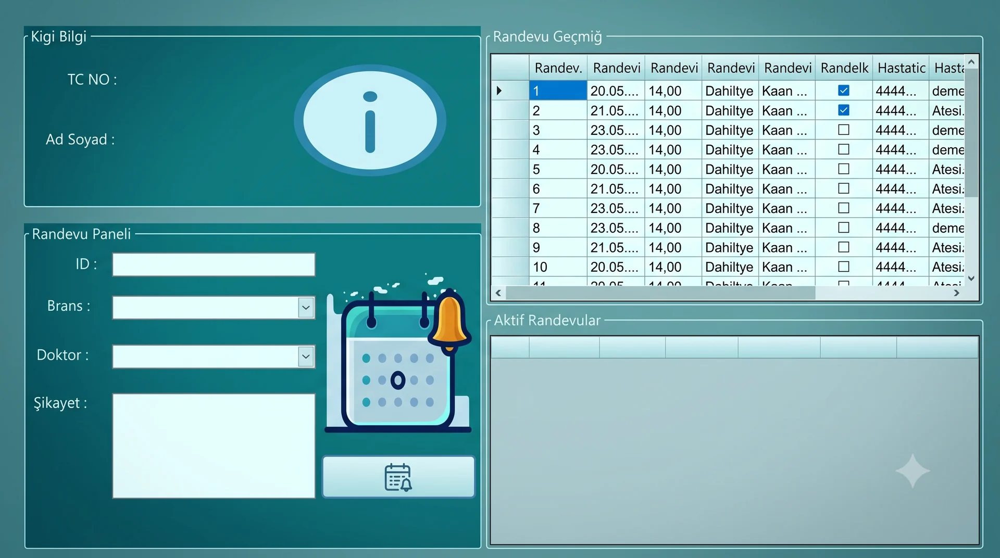

Desktop-Software & Datenbankprojekt
Hospital System
Eine Windows-Forms-Anwendung für mehrere Rollen, gebaut mit C#, .NET Framework und SQL Server, die Patientenregistrierung, Terminplanung und Abläufe des Klinikpersonals zeigt. Das Repository bewahrt Codeauszüge, ein Datenbankschema und Oberflächenbelege des ursprünglichen akademischen Builds von 2024.
C#.NET FrameworkWindows FormsSQL ServerADO.NETDatabase Design

Projektkontext
Ein datenbankgestützter Desktop-Workflow rund um drei Nutzerrollen.
Das Projekt entstand als individuelle Studienarbeit im Kurs Visuelle Programmierung mit Fokus auf datenbankgestützter Registrierung, Anmeldung und CRUD-Operationen. Die Domäne wurde als vereinfachter Terminablauf für Patienten, Ärzte und Sekretariat modelliert, nicht als produktive Klinikumgebung.
Das Repository bewahrt 17 Codeauszüge, ein Datenbankschema und Oberflächenbelege — nicht jedoch die ursprünglichen Solution-, Projekt-, Designer-, Ressourcen- oder Build-Dateien. Es wird als Quellarchiv präsentiert, nicht als lauffähiges oder ausgeliefertes Produkt.
Meine Rolle
Softwareentwickler
Ich habe die Anwendung als verantwortlicher Softwareentwickler für Formulare, Datenbankoperationen und die dokumentierte Projektabgabe entworfen und umgesetzt. Die Arbeit umfasste Oberflächenfluss, ADO.NET-Abfragen, Aufbau des SQL-Server-Schemas sowie die Abläufe für Patienten, Ärzte und Sekretariat.
Geprüfte Beiträge
- Oberflächenfluss in Windows Forms
- Navigation über mehrere Formulare
- Patienten-Workflow
- Arzt-Workflow
- Sekretariats-Workflow
- ADO.NET-Datenbankoperationen
- SQL-Server-Schema
- CRUD-Umsetzung
- Projektdokumentation
Nutzerrollen
Drei eigene formularbasierte Abläufe
Die Abläufe für Patienten, Ärzte und Sekretariat sind über eigene Formulare und datenbankgestützte Zugangsprüfungen getrennt.
Patientin
Registrierung, datenbankgestützte Zugangsprüfung, Profilbearbeitung, Auswahl von Fachbereich und Arzt, Filtern freier Termine, Terminbuchung und Einsicht in die Terminliste.
Sekretariat
Datenbankgestützte Zugangsprüfung, Anlegen freier Termine, Arztverwaltung, Fachbereichsverwaltung, Erstellen von Ankündigungen und vollständiger Zugriff auf die Terminliste.
Arzt
Datenbankgestützte Zugangsprüfung, Profilinformationen, Auflistung zugeordneter Termine, Einsicht in Beschwerdedetails, Zugriff auf Ankündigungen und Profilbearbeitung.
Die Trennung ist über eigene Formulare und Zugangsprüfungen umgesetzt, nicht über ein zentrales rollenbasiertes Berechtigungssystem.
Terminstrecke
Von der vom Sekretariat angelegten Verfügbarkeit bis zur Buchung durch die Patientin.
Der geprüfte Ablauf führt über eigene Formulare und gemeinsame Zeilen in Tbl_Randevular.
Einrichtung durch das Sekretariat
Datum, Uhrzeit, Fachbereich und Arzt wählen
Eine freie Terminzeile anlegen
Den Termin in Tbl_Randevular speichern
Terminbuchung durch die Patientin
Fachbereich wählen
Arzt wählen
Freie Zeilen mit RandevuDurum = 0 filtern
Einen Termin wählen
Patientenkennung und Beschwerde zuordnen
Terminstatus auf gebucht setzen
Nachverfolgung durch den Arzt
Anmelden
Dem Arzt zugeordnete Termine ansehen
Ausgewählten Termin und Beschwerdedetails prüfen
Datenbankdesign
Sechs SQL-Server-Tabellen für direkte Operationen zwischen Formular und Datenbank.
Das SQL-Server-Modell umfasst sechs Tabellen für Patienten, Ärzte, Sekretariat, Fachbereiche, Termine und Ankündigungen. Die Formulare greifen über ADO.NET-Kommandos und -Adapter direkt darauf zu; Terminbeziehungen werden überwiegend über TC-, Arztnamen- und Fachbereichswerte abgebildet.
Tbl_Hastalar
Patienten
Tbl_Doktorlar
Ärzte
Tbl_Sekreter
Sekretariat
Tbl_Branslar
Fachbereiche
Tbl_Randevular
Termine
Tbl_Duyurular
Ankündigungen
Geprüfte Grenzen
- Datums- und Zeitwerte werden als Zeichenketten gespeichert.
- Arzt- und Fachbereichsbeziehungen werden als Text gespeichert.
- Die Patientenzuordnung erfolgt über eine TC-Zeichenkette.
- PK-/FK-/Unique-/Check-Constraints sind im archivierten Schema nicht vorhanden.
- RandevuDurum hat den Standardwert 0.
Umsetzung in Windows Forms
Fünfzehn Formulare aus ereignisgesteuerter UI und ADO.NET-Operationen.
Fünfzehn nutzerseitige Formulare decken Navigation, Registrierung, Anmeldung, Profilbearbeitung, Terminoperationen und die Verwaltung durch das Sekretariat ab. Die Umsetzung zeigt ereignisgesteuerte WinForms-Entwicklung, DataGridView-Bindung und überwiegend parametrisierte SQL-Kommandos.
Belege der Umsetzung
- Event handlers
- Form navigation
- DataGridView
- SqlConnection
- SqlCommand
- SqlDataReader
- SqlDataAdapter
- Parameterized commands
- MessageBox feedback
- Direct CRUD operations
Test & Grenzen
Aussagekräftige Workflow-Belege mit klaren archivarischen und technischen Grenzen.
Der archivierte Code enthält Pflichtfeldprüfungen sowie nutzerseitige Erfolgs- und Fehlermeldungen in mehreren Formularen. Eine Laufzeitprüfung ist derzeit nicht möglich, weil im Repository die ursprünglichen Solution-, Projekt-, Designer- und Ressourcendateien fehlen; zudem fehlen der Umsetzung Schichten für Transaktionen, Ausnahmebehandlung und sichere Passwortverarbeitung.
Im Archiv belegt
- Pflichtfeldprüfungen in mehreren Formularen
- Nutzerseitige Erfolgs- und Fehlermeldungen
- Datenbankgestützte Zugangsprüfungen
- Parametrisierte Kommandos in den meisten Schreiboperationen
- Codeauszüge zu CRUD und Termin-Workflow
Grenzen
- Das Repository ist ein Quellarchiv, kein lauffähiger Build.
- Die ursprünglichen Solution- und Designer-Dateien sind nicht verfügbar.
- Passwörter werden in der archivierten Umsetzung im Klartext gespeichert und verglichen.
- Eine zentrale Berechtigungsschicht ist nicht vorhanden.
- Einzelne SQL-Filter verwenden Zeichenkettenverkettung.
- Die Verwaltung des Verbindungslebenszyklus ist unvollständig.
- Ausnahmebehandlung und Transaktionen sind nicht umgesetzt.
- Stornierung und Verlegung von Terminen sind nicht umgesetzt.
- Datenbank-Constraints und -Beziehungen sind begrenzt.
- Das Laufzeitverhalten lässt sich aus diesem Repository derzeit nicht erneut prüfen.
Das Projekt zeigt rollenspezifische Desktop-Workflows und datenbankgestützte Zugangsprüfungen; Passwortsicherheit, Autorisierung und Datenschutzkontrollen liegen außerhalb des abgeschlossenen Umfangs.
Ergebnis & Oberflächenbelege
Ein Desktop-Workflow für mehrere Rollen, bewahrt als technischer Projektbeleg.
Das Projekt zeigt einen durchgängigen Desktop-Workflow über mehrere Nutzerrollen, Formularnavigation und relationale Datenoperationen hinweg. Sein Portfoliowert liegt in der Kombination aus C#-UI-Logik, ADO.NET-Zugriff und einer konkreten Termindomäne; die Galerie bewahrt datenschutzkonforme Belege der ursprünglichen Oberfläche.
Detailansicht für Patienten mit Terminauswahl und Verlaufsbereichen.
Detailansicht für das Sekretariat mit Termin-, Arzt- und Ankündigungsoperationen.
Detailansicht für Ärzte mit zugeordneter Terminliste und Detailbereich.
Ausschnitt der SQL-Server-Tabellenansicht mit der Datenstruktur der Anwendung.
Ausschnitt des Registrierungsformulars mit Identitäts-, Kontakt- und Kontodaten.
Verwandte Arbeiten
Weiter mit einer anderen Software-Case-Study
Lebenslauf & Kontakt
Praxisnahe Software rund um klare Nutzer, Abläufe und Daten.
Sehen Sie sich das Quellarchiv oder meinen Lebenslauf an oder nehmen Sie Kontakt auf, um über Softwareentwicklung, Datenbanksysteme und workflow-orientierte Produkte zu sprechen.